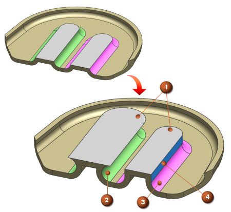

Label Notch Blend
Label Notch Blend
Use this command to label faces so that NX recognizes them as blends. This command is useful when you use Synchronous Modeling commands such as Move Face and Resize Blend. A labeled blend becomes a rolling ball blend.
The example shows the result of using the Move Face command on neighboring labeled and unlabeled faces.
|
 |
|
In History mode, faces labelled as notch blend appear in the Part Navigator as Label Notch Blend.
If the model is converted to History-free mode, the label exists, but the feature does not appear in the Part Navigator.
Your design needs may require you to remove an existing label. To do this, you must create another notch blend feature using the same faces that you previously labeled, and select the Delete Label check box. A new notch blend feature is created in the Part Navigator.
Where do I find it?
|
Application |
Modeling, Shape Studio. Advanced Simulation, Manufacturing |
|
Toolbar |
Synchronous Modeling→Detail Feature Drop-down→Label Notch Blend |
|
Menu |
Insert→Synchronous Modeling→Detail Feature→Label Notch Blend |